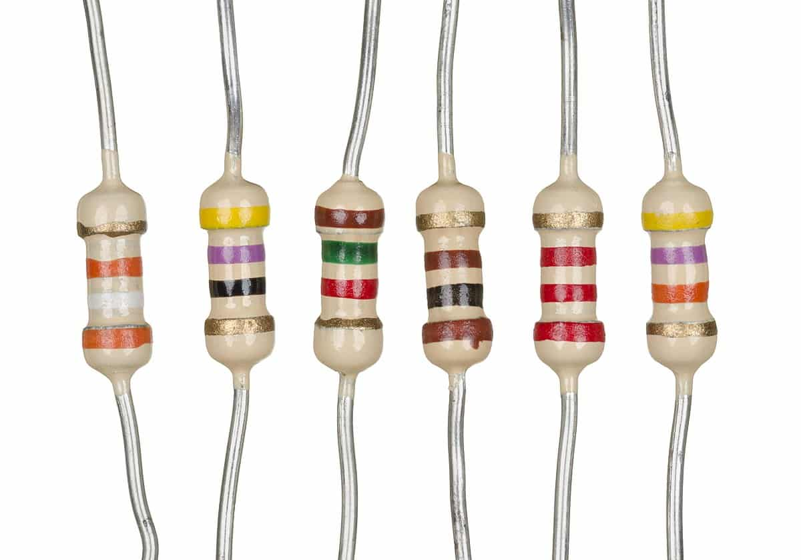
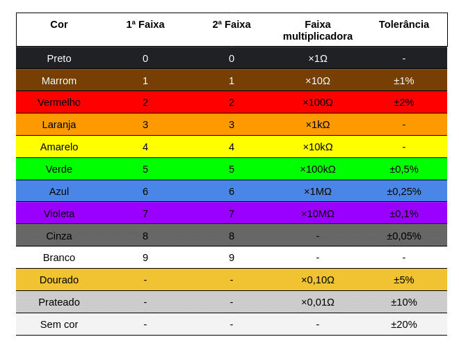
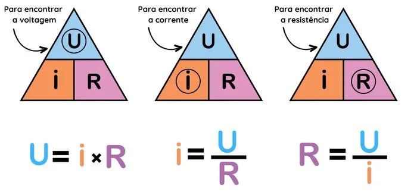
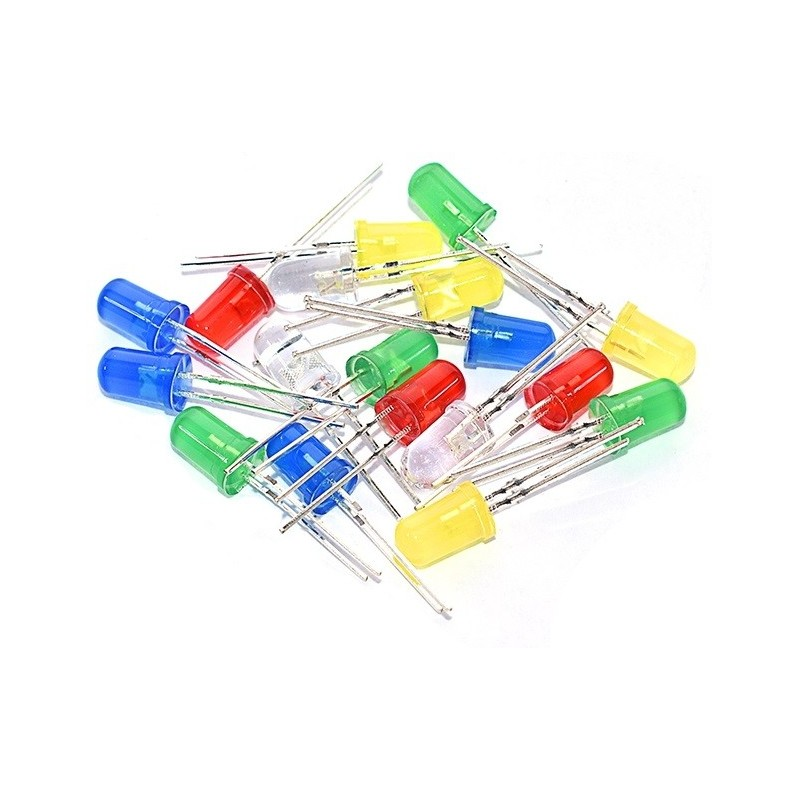
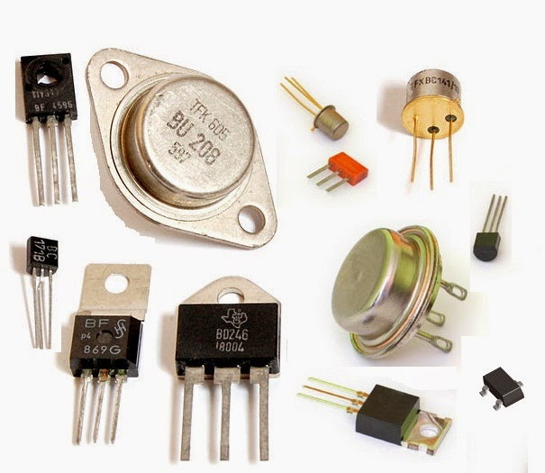
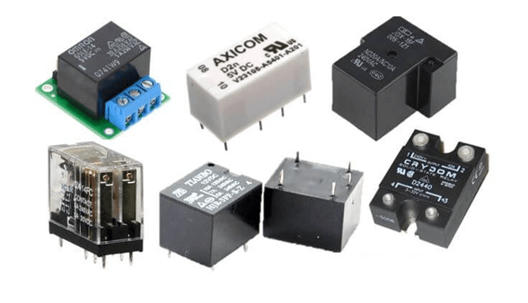


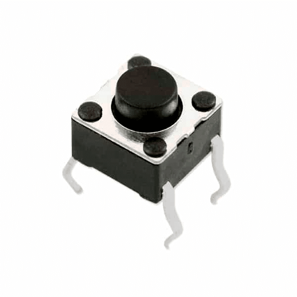
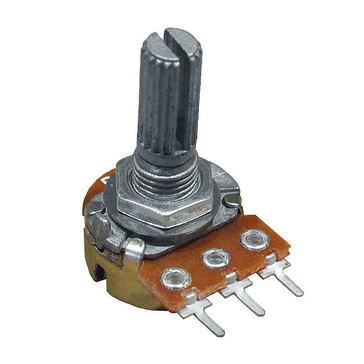

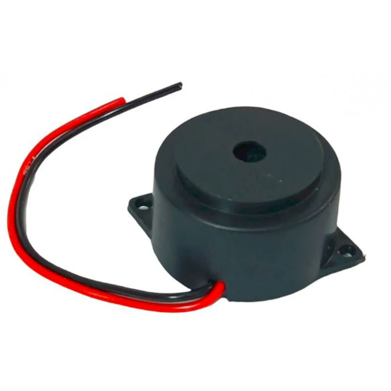
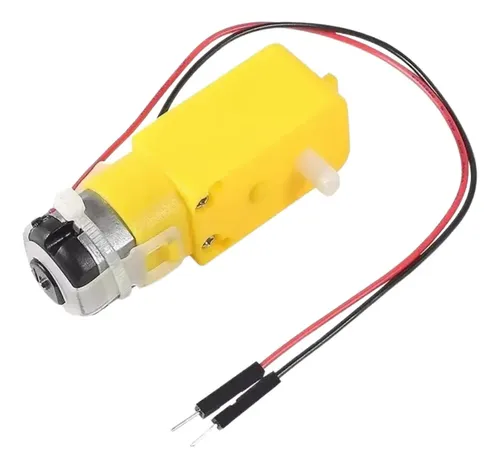
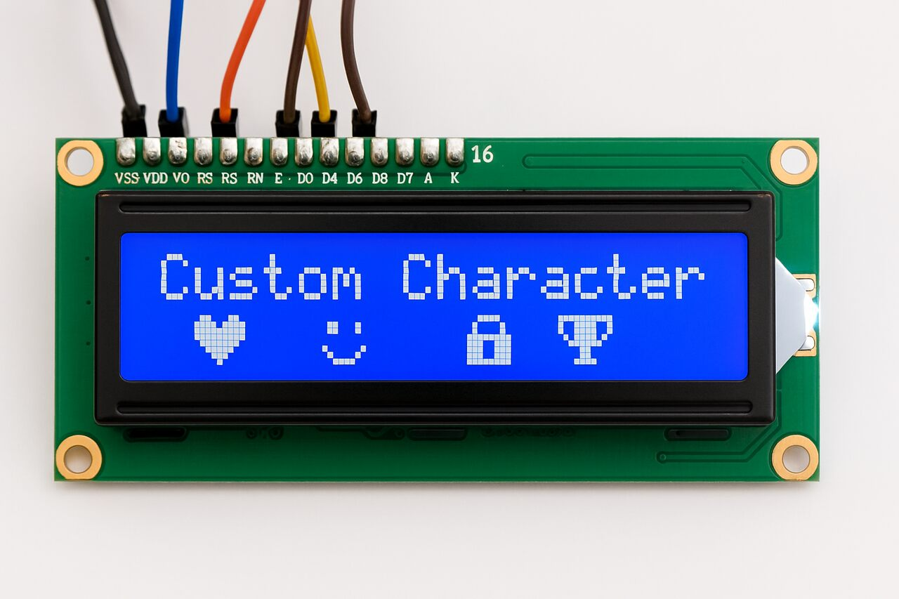
OS COMPONENTES ELETRÔNICOS
| NOME | IMAGENS | DESCRIÇÃO |
|---|---|---|
| RESISTORES |
 |
Resistores são componentes eletrônicos passivos que limitam ou controlam o fluxo de corrente elétrica em um circuito, convertendo energia elétrica em energia térmica (efeito Joule). Eles são fundamentais para proteger componentes sensíveis, realizar divisão de tensão e polarizar transistores, sendo sua resistência medida em ohms. |
| TABELA DE CORES |
 |
A tabela oficial de código de cores de resistores permite identificar rapidamente o valor da resistência em ohms e a sua tolerância de fabricação. |
| LEI DE OHM |
 |
A Lei de Ohm estabelece que a corrente elétrica em um circuito é diretamente proporcional à tensão aplicada e inversamente proporcional à resistência do material, sendo calculada pela fórmula V = R * I. Complementarmente, a resistência depende diretamente do comprimento do fio e da sua resistividade, e inversamente da sua espessura. |
| LEDs |
 |
Os LEDs (Diodos Emissores de Luz) são componentes eletrônicos semicondutores que emitem luz ao receber corrente elétrica, oferecendo alta eficiência energética, longa vida útil (até 50.000 horas) e baixo consumo. São amplamente usados em lâmpadas, fitas (RGB/5050), refletores e telas. |
| TRANSISTORES |
 |
O transistor funciona como um interruptor eletrônico ou amplificador de sinal em circuitos. Ele controla uma corrente elétrica maior a partir de uma corrente bem menor aplicada em sua base. É a peça fundamental da eletrônica moderna, permitindo a lógica digital e o processamento de dados em computadores. |
| RELÉ |
 |
O relé é um interruptor eletromecânico que permite controlar circuitos de alta potência usando sinais de baixa potência. Quando uma corrente passa por sua bobina interna, um campo magnético é gerado, atraindo contatos físicos que fecham ou abrem o circuito externo de forma isolada e segura. |
| PROTOBOARD |
|
A protoboard (ou matriz de contatos) é uma placa perfurada usada para construir e testar protótipos de circuitos eletrônicos sem solda. Seus furos são interconectados internamente por trilhas condutoras metálicas, permitindo encaixar e remover componentes e fios de forma rápida, segura e reutilizável. |
| JUMPERS |
|
Os jumpers são fios condutores elétricos flexíveis, com conectores agulha (macho) ou fenda (fêmea) nas extremidades, usados para fazer conexões em protoboards. Eles transportam a corrente e os sinais elétricos entre diferentes componentes do circuito de forma prática, organizada e sem necessidade de soldagem. |
| PUSH BUTTON |
 |
O push button (ou botão pulsador) é um interruptor mecânico simples que altera o estado do circuito apenas enquanto é pressionado. Ele fecha o circuito quando acionado, permitindo a passagem de corrente, e retorna à posição original por uma mola interna assim que você solta o botão. |
| POTENCIOMETRO |
 |
O potenciômetro é um resistor variável cujo valor de resistência é ajustado manualmente ao girar um eixo ou mover um cursor. Ao alterar a resistência interna, ele controla a quantidade de corrente ou divide a tensão no circuito, sendo muito usado para ajustar o volume de som. |
| LDR |
|
O LDR (Resistor Dependente de Luz) é um sensor cuja resistência elétrica muda conforme a intensidade da luz que incide sobre ele. Em ambientes iluminados, sua resistência cai drasticamente; no escuro, ela aumenta muito, sendo ideal para acionar luzes de postes públicos automaticamente. |
| BUZZER |
 |
O buzzer é um pequeno componente sonoro que converte sinais elétricos em ondas de áudio para emitir bipes, alarmes ou tons simples. Ele pode ser do tipo ativo, que apita apenas ao receber energia direta, ou passivo, que exige frequências específicas para reproduzir diferentes notas musicais. |
| MOTOR |
 |
O motor elétrico é um atuador que transforma a energia elétrica do circuito em energia mecânica de rotação por meio de campos magnéticos. Ele gira um eixo para gerar movimento físico, sendo essencial para acionar rodas de robôs, ventoinhas, esteiras ou qualquer mecanismo que exija força. |
| DISPLAY |
 |
O display é uma tela de interface visual usada para exibir textos, números, gráficos ou informações importantes do circuito para o usuário. Ele pode ser composto por LEDs de sete segmentos simples ou telas LCD e OLED complexas, traduzindo sinais elétricos em dados legíveis. |